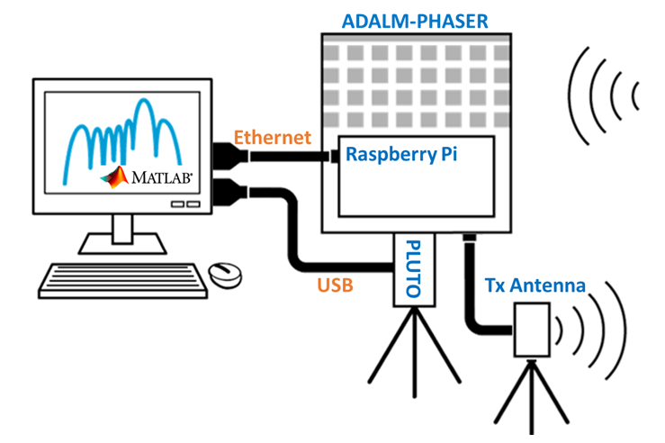

Phaser MATLAB Setup Guide
Getting Started and Setup
If the CN0566 (Phaser) board is not yet assembled, please visit the Unboxing and Initial Setup Guide and watch the Unboxing/Setup Video to see how to assemble the Phaser and create an image of ADI Kuiper Linux onto the Raspberry Pi’s SD card.
After basic setup is complete, configure the Phaser in the Host Computer Configuration.
{kind=link}

In this configuration:
Pluto is disconnected from the Raspberry Pi and connected direct to your computer using a microUSB to USB cable.
The Raspberry Pi is connected to your computer via ethernet
Setting Up MATLAB
Tip
If you already have a recent (R2022b or newer) version of MATLAB installed, please skip ahead to the Installing Toolboxes section below.
Installing MATLAB
For the hardware board support packages to work, you must use Matlab version R2022b or newer. You can go to the download page by clicking here. You may be required to sign in with your MathWorks account first.

Select the release version on the left, then click the download button.
After downloading the installer, open it to run the MATLAB installation tool. During the installation process, there will be a window to select which products and toolboxes will be installed, as shown in the image below. Ensure that all the products shown in the image have been selected.

Once this has been done, continue installing MATLAB through the installer as normal.
Installing Toolboxes
Once MATLAB is installed, additional toolboxes can be downloaded through MATLAB’s built-in Add-On Explorer. It can be found by opening MATLAB, selecting the Home tab, and clicking the three colored cubes labeled Add-Ons located near the top.

This will open the Add-On Explorer. Here, you can search for toolboxes using the search bar in the top right corner, and install them.

Confirm that the following toolboxes are installed. Just put the name in the search and they should indicate “Installed”. If any are not installed, install these first:
Antenna Toolbox
Communications Toolbox
DSP System Toolbox
Phased Array System Toolbox
Signal Processing Toolbox
Now, install these additional toolboxes:
Analog Devices, Inc. RF and Microwave Toolbox
Analog Devices, Inc. Transceiver Toolbox
MATLAB Support for MinGW-w64 C/C++ Compiler
Install the MATLAB Pluto Toolbox
Communications Toolbox Support Package for Analog Devices ADALM-Pluto Radio

Caution
When installing this Pluto add on, MATLAB may prompt you to update/reinstall Pluto’s firmware. Do not allow MATLAB to modify Pluto’s firmware! Choose “Cancel” on the image below. Then, follow the Phaser’s Quick Start Guide instructions to ensure you have the latest firmware, with the correct configuration for the Phaser.

Install the LibIIO Package
The LibIIO package may be needed for MATLAB to communicate and work with the Phaser. If the absence of LibIIO is causing problems with MATLAB or Phaser, then it can be installed from here
Running the Labs
Verify Connectivity
With Phaser connected to your local network or directly to your host machine with MATLAB installed, create an instance of the adi.Phaser class from the command prompt with the IP address of the Raspberry Pi.
bf = adi.Phaser;
bf.uri = 'ip:phaser';
bf()
This will connect and configure Phaser with a default set of parameters. If you receive a connectivity error verify the Raspberry Pi is powered up and you can at least ping the device. If you are having issues please use the link at the very bottom of this page.
If you get an error that refers to Could not find file ad9361-wrapper.h. Then you will need to manually install libad9361 by running the following commands in your MATLAB command window:
A=adi.utils.libad9361
A.download_libad9361
Then confirm that the bf() command above works and does not return any errors. If so, then next verify connectivity to Pluto. Create and instance of the adi.AD9361.Rx class and run the operator method as so:
sdr = adi.AD9361.Rx
sdr.uri = 'ip:pluto';
data = sdr();
Again, confirm that these commands do not generate any errors. The data vector should contain non-zero data.
If there are errors while attempting to verify connectivity, please try the following options:
Check all the packages/toolboxes listed above are installed properly
Restart MATLAB and run the code again
Disconnect and re-connect the cable to the device in question
Ensure the Raspberry Pi’s SD card has ADI Kuiper Linux installed (and that it works)
Running Scripts
Once both the Phaser and Pluto are able to communicate with MATLAB, open the Phaser_steeringAngle file found here
This script functions to scan through a range of steering angles and output a plot of the array factor.
Also download the other files in this folder:
setupPluto.m,
setupPhaser.m,
setupAntenna.m,
findTxFrequency.m.
This segment of the code serves to initialize the Pluto and Phaser objects in MATLAB using the ADI toolboxes installed earlier, here labeled as “rx” and “bf” respectively. It also scans briefly to find the frequency of the HB100 emitter.
% Key Parameters
signal_freq = 10.145e9; % this is the HB100 frequency
signal_freq = findTxFrequency();
plutoURI = 'ip:192.168.2.1';
phaserURI = 'ip:phaser.local';
% Setup the pluto
rx = setupPluto(plutoURI);
% Setup the phaser
bf = setupPhaser(rx,phaserURI,signal_freq);
bf.RxPowerDown(:) = 0;
bf.RxGain(:) = 127;
This segment creates a model of the antenna array on the Phaser, using the Phased Array System Toolbox (phased) from MathWorks. The Phaser features 8 uniformly spaced elements, which is modeled using the Uniform Linear Array object (phased.ULA) from the Phased Array System Toolbox. A corresponding steering vector is created using the SteeringVector object, also from the Phased Array System Toolbox.
% Create the model of the phaser
c = physconst('LightSpeed');
phaserModel = phased.ULA('NumElements',8,'ElementSpacing', ...
bf.ElementSpacing);
steeringVec = phased.SteeringVector("SensorArray",phaserModel, ...
'NumPhaseShifterBits',7,'PropagationSpeed',c);
This segment just sets the gain levels and phase calibration values.
%% Set all gains to max and phases to zero
bf.RxGain(:) = 127; % max gain = 127, min gain = 0
bf.RxAttn(:) = 0; % if RxAttn=1 then insert 20dB attenuator
bf.RxPhase(:) = 0;
bf.LatchRxSettings(); % write new settings to the ADAR1000s
% Load Phase calibration values
PhaseCal = [0; -8.4375; -5.625; -5.625; 67.5; 87.1875; 90; 101.25];
This section of code is where the actual beam steering occurs. The code creates an array containing the angles that the beam will be steered through. Then, it performs a loop where it:
Uses the given steering angle to create another array containing the respective phase shifts to be applied to each antenna element
Applies the phase shifts to the Phaser
Collects data from the ADALM-PLUTO, performs an FFT on the data to get the max amplitude, and then records it
Repeats for the next steering angle
%% Sweep the steering angle and capture data
steeringAngle = -90 : 90;
ArrayFactor = zeros(size(steeringAngle));
for ii = 1 : numel(steeringAngle)
arrayWeights = steeringVec(signal_freq,steeringAngle(ii));
phases = rad2deg(angle(conj(arrayWeights(:))));
phases = phases - phases(1);
phases = phases + PhaseCal;
phases = wrapTo360(phases);
bf.RxPhase(:) = phases.';
bf.LatchRxSettings();
receivedSig_HW = rx();
receivedSig_HW_sum = sum(receivedSig_HW,2);
receivedFFT = fft(receivedSig_HW_sum);
ArrayFactor(ii) = (max(abs(receivedFFT)));
end
Here, the Phased Array System Toolbox is used to simulate the array factor for the Phaser. Then both the experimentally obtained array factor (from the data above) and the simulated array factor are plotted. The resulting plot that appears should resemble the image below:
%% Compare the measured array factor and model
[~,ind] = max(ArrayFactor);
EmitterAz = steeringAngle(ind)
figure(101)
arrayWeights = steeringVec(signal_freq,EmitterAz);
pattern(phaserModel,signal_freq,-90:90,0,'CoordinateSystem', ...
'Rectangular','Type','powerdb','weights',arrayWeights)
hold on;
% Plot the measured data and the model
plot(steeringAngle,mag2db(ArrayFactor./max(abs(ArrayFactor))))

Complete Radar Example
Once you have everything above installed, and working, then proceed to the MathWork’s site Phaser Control with MATLAB
This is a complete tutorial on how to implement more advanced radar functions, like multi chirp range doppler plotting, in MATLAB. Note: these scripts will require the “Phased Array System Toolbox” to be installed.
Note
For questions or help with the Phaser, please visit: EngineerZone